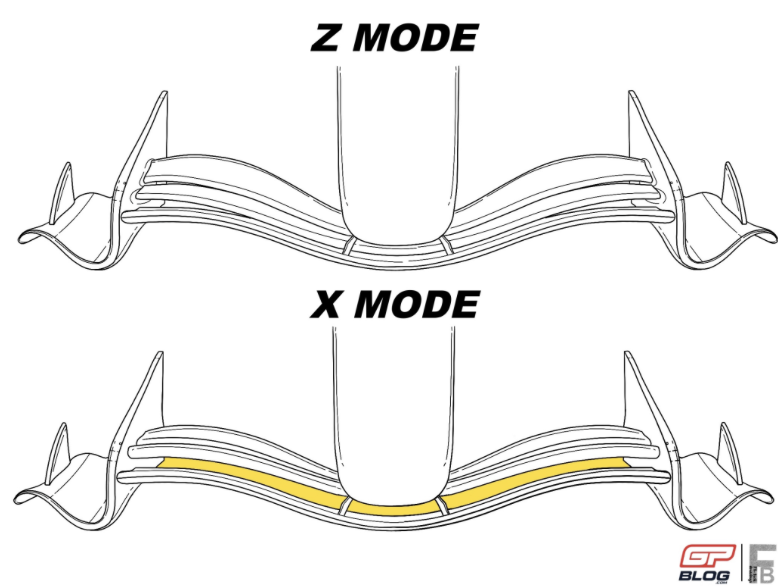
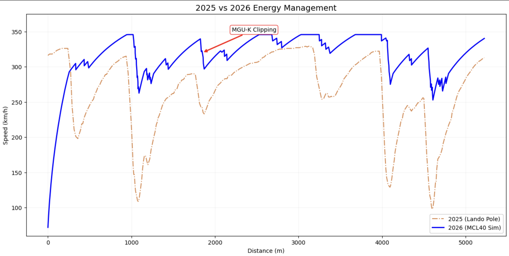
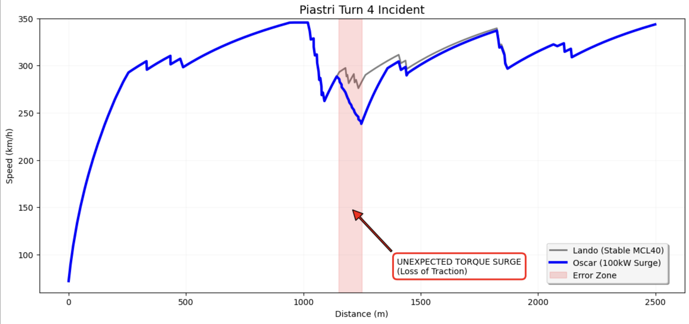
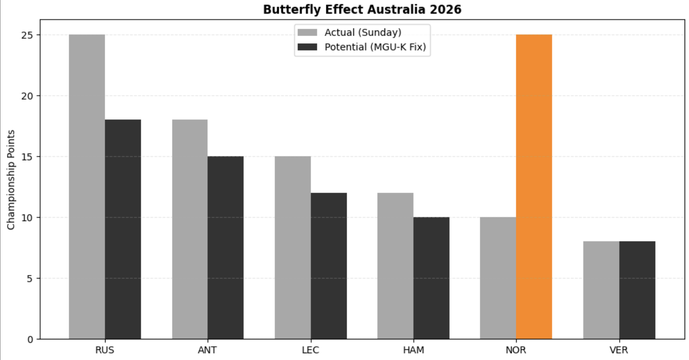
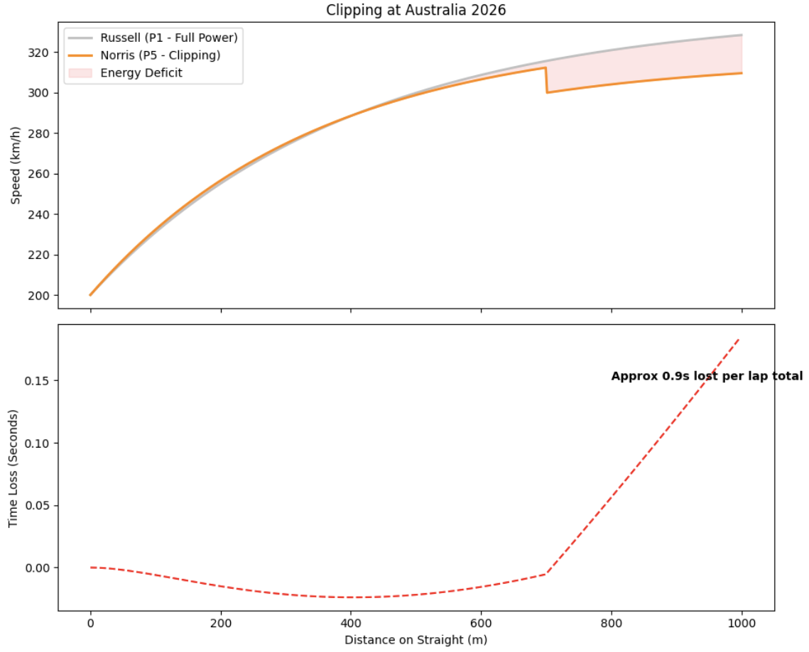
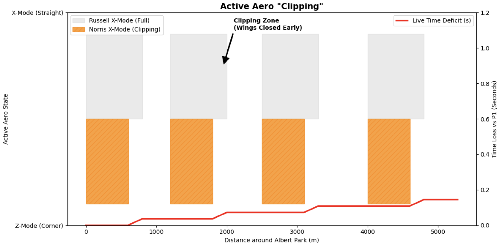
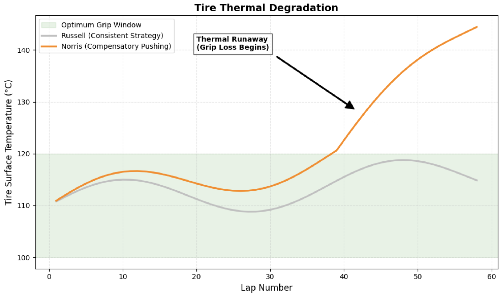
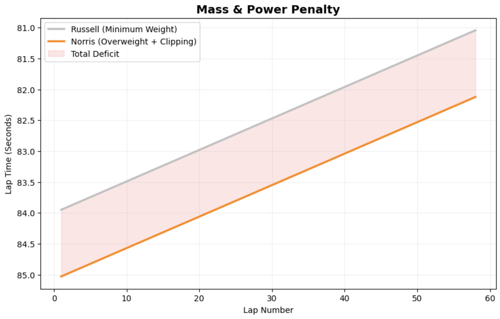
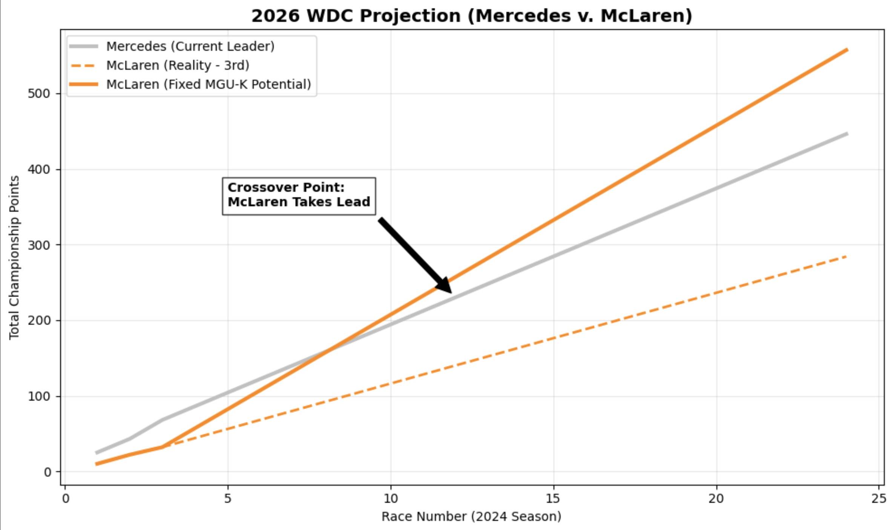

The New Formula 1: Analysis of the 2026 Regulations
By Melody Shen | June 11, 2026

Introduction
Throughout the history of Formula 1, the change of technical regulations have drastically changed who has dominated the sport. The 2014 transition to the V6 Hybrid Power Unit brought Mercedes great glory, while the 2022 “ground effect” era helped create the domination of Max Verstappen. Now, we are at the start of the 2026 regulation period, a transition towards smaller, lighter cars with a heavier emphasis on internal electrical systems. Using a point-mass lap simulator, this analysis predicts how these changes will impact driver performance and the technical challenges that will help define the next generation of champions.
Background

In the past, Formula 1 cars had one general “shape” for the entire lap, with only the rear wing changing to help drivers overtake and pass each other. If the team designed a large front wing to support the driver’s grip in the corners, that same wing would hinder them on the straights, slowing the car down. In 2026, the cars’ “shapes” are changing, as both the front and rear wings can now move while the car is driving. There are two types of Active Aero while racing: “X mode” and “Z mode” (default mode). “X mode” uses low drag on straights and opens up the wings to minimize air resistance, while “Z mode” has more downforce and provides the maximum grip for braking and cornering.
To encourage wheel-to-wheel racing, the 2026 cars also feature an “Override Mode”, activated by an “Overtake” button, which can only be used in certain sections of the track and if the driver is within a second of the driver in front of them. The “Overtake” button, like the mushroom in Mario Kart, gives the driver a sudden boost of electrical power, helping them pass their opponent. However, due to the limited battery size, the drivers must be able to conserve their electrical power throughout the race. If they use up all the power, that leads to clipping, where the power suddenly cuts out, leaving the driver struggling to maintain speed while their opponents race past.
The 2026 cars are also getting shorter, narrower, and 30kg lighter to help give more exciting opportunities for wheel-to-wheel racing. However, to accommodate the smaller cars, the tires have also become smaller, making them incredibly sensitive to heat and increasing tire degradation.
Now that we’ve been introduced to the 2026 Formula 1 regulations, let’s take a closer look at how they actually play out in the 2026 Australian Grand Prix.
2026 Australian GP Analysis
Lando Norris, the McLaren F1 winner of the 2025 Australian GP, unfortunately only placed 5th in the 2026 race. Through overlaying Norris’s 2025 pole lap, the fastest lap set by a driver in qualifying, with a simulated version of Norris’s 2026 fastest lap, we can see the distinctions between 2025 and 2026 F1 cars. The blue line (representing the 2026 lap) is consistently above the orange line (representing the 2025 lap), reaching higher speeds throughout the lap. Through the new Active Aero modes (“X mode” and “Z mode”), the 2026 car was able to accelerate and be faster than its predecessor.
However, there are still noticeable weaknesses, as shown by the “MGU-K Clipping”. Unlike the 2025 McLaren’s line, which is much smoother, the 2026 line often flattens out and plateaus near the 350 km/h mark before dipping sharply afterwards due to the MGU-K clipping. These more jagged lines show where the battery depletes and the electric boost shuts off, showing how it’s important to prioritize where and when to utilize and conserve energy.

Meanwhile, his teammate Oscar Piastri suffered a more drastic issue. During turn 4 of the formation lap, where drivers lined up in their qualifying positions to start the race, Piastri experienced an unfortunate sudden power surge of 100kW, which sent his car crashing into the wall. The red “Error Zone” in the line graph below contrasts Piastri’s unexpected loss of traction with Norris’s more stable starting lap. In 2026, the MGU-K, the motor generator unit, is around three times more powerful than its predecessor, causing loss of traction to have more severe consequences and heavier crashes. The “Error Zone” was also likely caused by an issue between conserving and deploying electrical power. Drivers and teams that adapt to the more powerful electrical force will have a greater advantage in traction-limited areas, preventing sudden wheelspins.

Examining the overall drivers and teams, we can also notice those particularly dominating the 2026 regulation era so far. The table below displays the top 10 drivers in the World Drivers Championship, as well as the top 5 teams in the World Constructors Championship (for teams) between 2025 and 2026. From the chart, Mercedes and Ferrari are excelling under the new regulations, while 2025 WCC winner McLaren is already starting to fall behind (only 10 points against Mercedes’ 43). Furthermore, Mercedes’ George Russell and Kimi Antonelli appear to be the top contenders for this year’s WDC, which makes sense as with Mercedes’ great car, the drivers are more confident and thereby, performing better than their competitors.
| --- 2025 vs 2026: TOP 10 DRIVERS --- | ||
|---|---|---|
| Pos | 2025 Driver | 2026 Driver |
| 1 | NOR (McLaren) | RUS (Mercedes) |
| 2 | VER (Red Bull Racing) | ANT (Mercedes) |
| 3 | RUS (Mercedes) | LEC (Ferrari) |
| 4 | ANT (Mercedes) | HAM (Ferrari) |
| 5 | ALB (Williams) | NOR (McLaren) |
| 6 | STR (Aston Martin) | VER (Red Bull Racing) |
| 7 | HUL (Kick Sauber) | BEA (Haas F1 Team) |
| 8 | LEC (Ferrari) | LIN (Racing Bulls) |
| 9 | PIA (McLaren) | BOR (Audi) |
| 10 | HAM (Ferrari) | GAS (Alpine) |
| --- 2025 vs 2026: TOP 5 CONSTRUCTORS --- | ||
|---|---|---|
| Rank | 2025 Team (Points) | 2026 Team (Points) |
| 1 | McLaren (27) | Mercedes (43) |
| 2 | Mercedes (27) | Ferrari (27) |
| 3 | Red Bull Racing (18) | McLaren (10) |
| 4 | Williams (10) | Red Bull Racing (8) |
| 5 | Aston Martin (8) | Haas F1 Team (6) |
Still, if you’re a Norris fan, there’s some hope for you. The bar graph below compares Norris’s actual P5 finish against his potential (without the MGU-K clipping issue). If the issues are resolved, there is an interesting butterfly effect, where Norris is not only on the podium, but actually wins the Grand Prix. This graph also shows how the 2026 car ranking may be volatile, as technology can adapt quickly, bringing changes to who is actually on the top.

Now, let’s take a deeper look at Norris (2025 winner) and Russell’s (2026 winner) performances at the Australian GP.
Russell v. Norris Analysis
Let’s start by examining the phenomenon of clipping between Norris and Russell, which creates a huge performance deficit under the 2026 regulations. In the top line plot, we can see an “Energy Deficit” zone, shaded in red, which portrays how massive the gap was between the two drivers’ speed. While Russell was driving at full power (maintaining a smooth acceleration curve), Norris had a sudden dip around the 700m mark. This dip was caused by clipping, where Norris pushed too hard, depleting his battery before reaching the end of the straight. This forced the car to rely mainly on its ICE, or Internal Combustion Engine, and caused Norris to be significantly slower than Russell.
Even though at the start of the straight Norris held a slight advantage (with the time loss dipping below 0), once the clipping occurs (around 700m), the time loss spikes up, portrayed in the bottom line plot. This resulted in a near 0.9 seconds of time lost per lap, highly important in a sport where 1 second in the overall race can determine the difference between first and second place, much less 0.9 seconds per lap. This significantly increased the gap between him and Russell. While McLaren has the raw pace to compete, Norris is greatly held back by this challenge of clipping.

Looking at the Active Aero clipping between Russell and Norris, the visualization below portrays the cars going back and forth between “X mode” and “Z mode”. As Russell is able to stay in “X mode” for the whole duration of the straight, his car is able to decrease the air resistance, making him faster and maximizing his speed. Meanwhile, Norris is forced to exit “X mode” earlier, losing a great advantage on the straights. Since his battery is depleted and suffering from clipping, the car’s wings automatically go back to “Z mode” to conserve and harvest energy for the next section of the race. This “Clipping Zone” turns Norris to experience heavier drag force, while Russell is still accelerating, causing an increase in time loss.

Additionally, since Norris is trying to compensate for the time loss caused by clipping, he is pushing his car to go faster, resulting in his tires experiencing heavier degradation. Under such strain, the narrower 2026 tires overheat, with Norris’s tire surface temperature skyrocketing to around 145 degrees Celsius. With less rubber surface area to dissipate the heat, the tires can not handle this extra stress, causing him to experience heavy grip loss. Meanwhile, Russell, who is driving more consistently, maintains a steady temperature below 120 degrees Celsius, providing him the optimum tire grip, reducing the chance of his car spinning into the barriers or locking up.

Furthermore, while Russell’s car is around the minimum weight requirement (768 kg), Norris’s car is slightly overweight. Due to the mass difference, there is a significant time gap between the two cars, with Russell’s being much faster. Because Norris’s car has greater mass, it has greater inertia, requiring more electrical power from the MGU-K to match Russell’s speed. In turn, this leads to faster battery drainage, which results in premature clipping at the end of straights and ultimately greatly slowing down the car, making it extremely difficult for Norris to overtake Russell.

Taking a look at the larger picture of the 2026 season, McLaren will still perform well. Despite its numerous technical challenges, the team remains a formidable force, holding 3rd place in the WCC behind Mercedes and Ferrari after the first few races. Assuming it fixes the MGU-K clipping issues, it may even surpass Mercedes, the current WCC leader.

Discussion
McLaren’s current struggles are not the result of a single flaw, but rather a domino-like technical deficiency. It starts with the car being overweight, which severely slows down the MCL40’s acceleration. To offset this, the car is forced to draw more from its MGU-K reserve, leading to premature clipping. This energy depletion then triggers another aerodynamic failure, as the car must exit its low-drag “X mode” early, making it easier to pass on the straights. Desperate to recover the time lost on the straights, drivers like Norris often overstress the narrower tires, resulting in decrease in tire grip and greater tire degradation.
Conclusion
Overall, the 2026 regulations have greatly transformed the fundamentals of Formula 1. My analysis shows that while McLaren has a competitive aerodynamic foundation, it is currently greatly hindered by its energy management challenges, such as MGU-K clipping and premature Active Aero transitions. However, the 2026 season is far from over. While Mercedes currently holds the advantage, if McLaren’s engineers can overcome the weight and other technical issues, we may just be looking at the new Formula 1 champion.